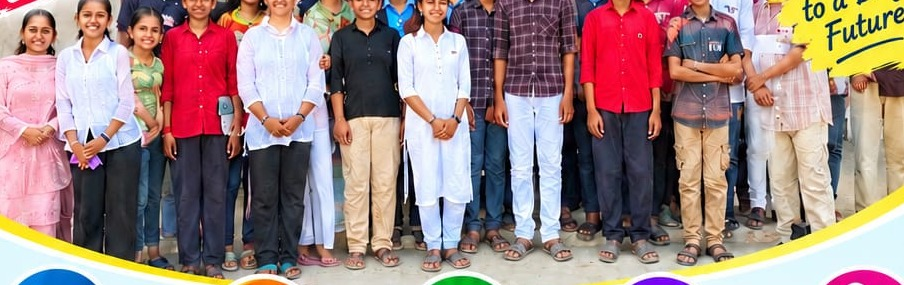
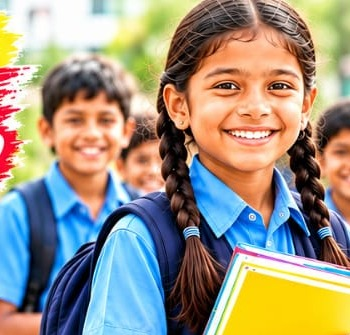

Every programme is delivered from Gahmar with volunteer support. Administrative costs are kept minimal so funding reaches classrooms and learners directly.
Classes 1–10
1. Education Support
Daily after-school support in core subjects, homework completion and exam preparation for children without access to private tuition.
Regular classes at INN Focus Classes, Gahmar
Books, study guidance and progress tracking
Parent meetings to prevent dropouts
Intended outcome: improved retention and learning continuity.
Life and vocational skills
2. Skill Development
Foundational skills that improve employability — communication, work habits and exposure to vocational options.
Communication and interpersonal skills
Basic computer literacy and guidance
Career counselling for rural youth
Intended outcome: better readiness for work and further training.
Beti Padhao
3. Girl-Child Education
Targeted efforts to enrol, retain and support girl students, with involvement of mothers and families.
Admission and retention support for girls
Health, safety and dignity sessions
Engagement with mothers and guardians
Intended outcome: higher enrolment and completion among girls.
Village development
4. Community Development
Village-level awareness and coordination, with limited assistance to families in genuine distress.
Awareness on education and entitlements
Referral support during emergencies
Volunteer participation from the community
Intended outcome: stronger community participation in schooling.
Swasth Bharat
5. Health and Hygiene
Practical guidance on hygiene, nutrition and preventive care for children and mothers.
Hand hygiene and sanitation practices
Nutrition awareness
Guidance on local health services
Intended outcome: healthier attendance and habits.
Youth · Women · Environment
6. Youth, Women and Environment
Leadership opportunities for youth and women, combined with plantation and cleanliness activities.
Youth volunteering and leadership roles
Women’s group participation
Plantation and village cleanliness
Intended outcome: local ownership and a cleaner environment.
Method
How a learner moves through our programme
Identify, teach, mentor and sustain — with family involvement at each stage.
1
Identify
Teachers and volunteers identify out-of-school and at-risk children in villages around Gahmar.
2
Teach
Daily classes at INN Focus Classes, with homework support and periodic assessments.
3
Mentor
Life skills, values and vocational orientation for older students, youth and women.
4
Sustain
Donor and volunteer support keeps classes free. Receipts and records are maintained.
Field documentation
From our classrooms

INN Focus Classes — regular batch, Gahmar

Priority to girl-child enrolment and retentionFoundational learning for primary grades
Test Series 2023–24 at INN Focus Classes, Gahmar — weekly topic-wise tests with a free trial class.